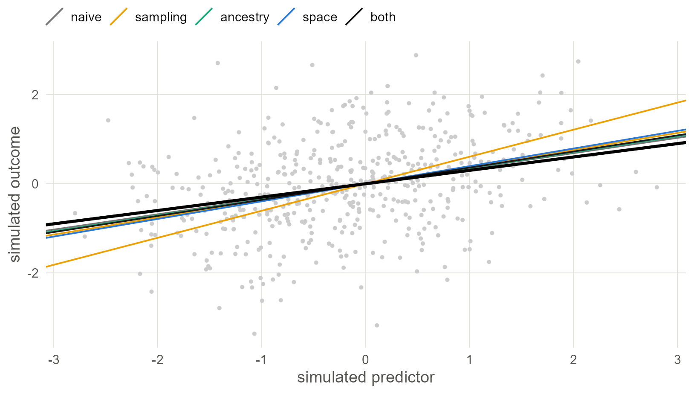
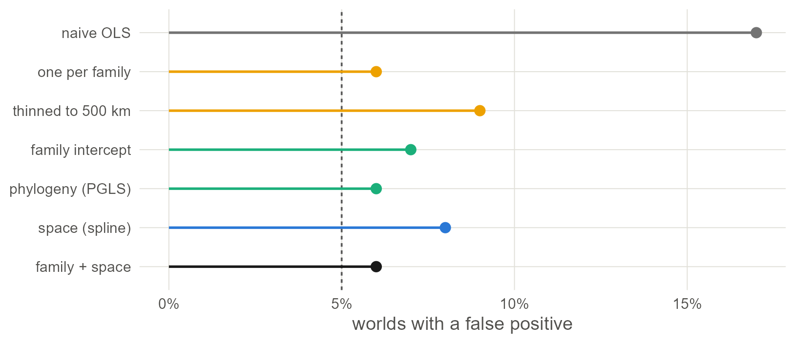

13 Does it recover the truth?
Real data cannot say which method is right, because nobody knows the true slope. Simulate data on the real tree and the real map where the slope is known, and see which methods find it.
13.1 Why simulate
Every chapter so far fitted a different model to the same 500 languages and got a somewhat different slope. The data cannot say which one is right, because the true effect of elevation on ejectives is the thing nobody knows.
Simulation turns the question round (T. P. Morris et al. 2019). Build an artificial world where you choose the slope, generate data from it, and hand the data to each method without telling it the answer. Do that a few hundred times and you can measure what no real data set can show: how often a method finds an effect that is not there, how far its estimates fall from the truth, and whether its intervals contain the truth as often as they claim.
13.2 Set up
The simulated worlds use the real tree and the real coordinates of the 500 languages, so they have the same lopsided families and the same crowded and empty regions as the real sample. Only the predictor and the outcome are invented.
library(ape)
library(nlme)
library(phylolm)
library(mgcv)
library(ggplot2)
base <- "https://rehan-muh.github.io/tutorials/data/"
d <- read.csv(paste0(base, "languages.csv"))
tree <- read.tree(paste0(base, "glottolog_tree.nwk"))
d$family <- factor(d$family)
rownames(d) <- d$glottocode
n <- nrow(d)
dir.create("fits", showWarnings = FALSE)Two matrices describe how the languages depend on each other: the phylogenetic correlation matrix of Chapter 3, and a spatial correlation matrix in which correlation falls off exponentially with great-circle distance, reaching about a third at 1,000 km.
A <- vcv(tree, corr = TRUE)[d$glottocode, d$glottocode]
km <- sp::spDists(as.matrix(d[, c("lon", "lat")]), longlat = TRUE)
S <- exp(-km / 1000)
# multiplying independent noise by these factors gives noise with the
# correlation structure of the tree (LA) or of the map (LS)
LA <- t(chol(A))
LS <- t(chol(S + diag(1e-8, n)))13.3 A world with a known slope
One function builds a world. Both the predictor x and the outcome y get a phylogenetic part, a spatial part and independent noise. The outcome also gets beta times the predictor. beta is the truth the methods have to recover.
simulate_world <- function(beta, shared = FALSE) {
field <- function() 0.6 * LA %*% rnorm(n) + 0.6 * LS %*% rnorm(n)
fx <- field() # what shapes the predictor
fy <- if (shared) fx else field() # what shapes the outcome
w <- d
w$x <- as.vector(fx + 0.5 * rnorm(n))
w$y <- as.vector(beta * w$x + fy + 0.5 * rnorm(n))
w
}The predictor is structured on purpose. If x were plain noise, ordinary regression would have honest standard errors whatever the outcome did. Galton’s problem (Naroll 1961) needs both sides to follow the tree and the map, as elevation and ejectives both do.
The outcome is continuous. That keeps every method fast, puts all their slopes on one scale, and gives the sampling tradition its fairest hearing, since ordinary least squares on a balanced sample is exactly what it prescribes.
Three scenarios cover the three ways a method can go wrong.
| Scenario | beta |
shared |
What it tests |
|---|---|---|---|
| no effect | 0 | no | How often does a method report an effect that is not there? |
| true effect | 0.3 | no | Is the estimate centred on the truth, and how wide is the interval? |
| shared history | 0 | yes |
x and y follow the same tree and map pattern. Can any method tell that from an effect? |
13.4 Seven methods
One function fits them all to a world and returns each slope with its standard error.
one_per_family <- function(w) {
pick <- tapply(seq_len(nrow(w)), w$family,
function(i) i[sample.int(length(i), 1)])
w[pick, ]
}
thinned <- function(w, min_km) {
keep <- integer()
for (i in sample.int(nrow(w))) {
if (all(km[i, keep] >= min_km)) keep <- c(keep, i)
}
w[keep, ]
}
fit_all <- function(w) {
ols <- function(data) summary(lm(y ~ x, data))$coefficients["x", 1:2]
fam <- lme(y ~ x, random = ~ 1 | family, data = w)
phy <- phylolm(y ~ x, data = w, phy = tree, model = "lambda")
spa <- gam(y ~ x + s(lat, lon, bs = "sos", k = 40),
data = w, method = "REML")
jnt <- gam(y ~ x + s(family, bs = "re") + s(lat, lon, bs = "sos", k = 40),
data = w, method = "REML")
est <- rbind(
"naive OLS" = ols(w),
"one per family" = ols(one_per_family(w)),
"thinned to 500 km" = ols(thinned(w, 500)),
"family intercept" = summary(fam)$tTable["x", 1:2],
"phylogeny (PGLS)" = summary(phy)$coefficients["x", 1:2],
"space (spline)" = summary(spa)$p.table["x", 1:2],
"family + space" = summary(jnt)$p.table["x", 1:2])
data.frame(method = rownames(est), est = est[, 1], se = est[, 2])
}The first is the naive regression. The next two are the sampling designs of Chapter 12. The last four are dependence models from Chapters 4 and 8, chosen because each fits in a second or two, which matters when it has to be done hundreds of times. None of them is told how the data were made: the phylogenetic model has to estimate λ, the spline has to find its own smoothness, and the joint model has only a family intercept to stand for the whole tree.
13.5 One world, looked at closely
Before running hundreds, look at one. Build a world with a true slope of 0.3 and fit everything.
set.seed(10)
w <- simulate_world(beta = 0.3)
one <- fit_all(w)
cbind(one["method"], round(one[c("est", "se")], 3))## method est se
## naive OLS naive OLS 0.343 0.043
## one per family one per family 0.606 0.094
## thinned to 500 km thinned to 500 km 0.380 0.082
## family intercept family intercept 0.295 0.043
## phylogeny (PGLS) phylogeny (PGLS) 0.355 0.045
## space (spline) space (spline) 0.395 0.044
## family + space family + space 0.361 0.045
kind_of <- function(method) {
ifelse(method == "naive OLS", "naive",
ifelse(method %in% c("one per family", "thinned to 500 km"), "sampling",
ifelse(grepl("+", method, fixed = TRUE), "both",
ifelse(grepl("space", method), "space", "ancestry"))))
}
hues <- c(naive = "grey45", sampling = "#EDA100", ancestry = "#1BAF7A",
space = "#2A78D6", both = "grey10")
one$kind <- factor(kind_of(one$method), levels = names(hues))
ggplot(w, aes(x, y)) +
geom_point(colour = "grey80", size = 0.8) +
geom_abline(data = one, aes(intercept = 0, slope = est, colour = kind),
linewidth = 0.6) +
geom_abline(intercept = 0, slope = 0.3, linewidth = 1.1) +
scale_colour_manual(values = hues, name = NULL) +
labs(x = "simulated predictor", y = "simulated outcome")
Figure 13.1: One simulated world with a true slope of 0.3. Each point is a language. The black line is the truth; the coloured lines are the seven estimates. In a single world every method lands near the truth, which is why one data set can never settle which method to trust.
13.6 Three hundred worlds
Now 100 worlds per scenario. This is the slow part, about five seconds a world, so the results are saved to a file and read back on later runs.
nsim <- 100
scenarios <- data.frame(
scenario = c("no effect", "true effect", "shared history"),
beta = c(0, 0.3, 0),
shared = c(FALSE, FALSE, TRUE))
if (file.exists("fits/simulation.rds")) {
sims <- readRDS("fits/simulation.rds")
} else {
set.seed(2026)
sims <- do.call(rbind, lapply(seq_len(nrow(scenarios)), function(i) {
do.call(rbind, lapply(seq_len(nsim), function(r) {
w <- simulate_world(scenarios$beta[i], scenarios$shared[i])
cbind(scenario = scenarios$scenario[i], truth = scenarios$beta[i],
world = r, fit_all(w))
}))
}))
saveRDS(sims, "fits/simulation.rds")
}Run time. Three hundred worlds take about 25 minutes. To try the code first, set
nsim <- 10; the pattern is already visible, though the percentages will be rough.
For every fit, build the 95% interval and record three facts: whether the interval excludes zero, whether it contains the truth, and how wide it is.
sims$method <- factor(sims$method, levels = one$method)
sims$scenario <- factor(sims$scenario, levels = scenarios$scenario)
sims$lower <- sims$est - 1.96 * sims$se
sims$upper <- sims$est + 1.96 * sims$se
sims$reject <- sims$lower > 0 | sims$upper < 0
sims$covered <- sims$lower <= sims$truth & sims$truth <= sims$upper
sims$width <- sims$upper - sims$lower
score <- aggregate(cbind(est, reject, covered, width) ~ method + scenario,
data = sims, FUN = mean)
names(score)[3:6] <- c("mean_estimate", "share_rejecting", "coverage",
"mean_width")13.7 No effect: who cries wolf?
## method mean_estimate share_rejecting coverage mean_width
## 1 naive OLS 0.003 0.17 0.83 0.175
## 2 one per family 0.000 0.06 0.94 0.380
## 3 thinned to 500 km -0.002 0.09 0.91 0.323
## 4 family intercept 0.002 0.07 0.93 0.176
## 5 phylogeny (PGLS) 0.001 0.06 0.94 0.176
## 6 space (spline) 0.000 0.08 0.92 0.174
## 7 family + space -0.001 0.06 0.94 0.174The true slope is zero, so every rejection is a false alarm, and an honest method raises one in 5% of worlds.
null$kind <- factor(kind_of(as.character(null$method)), levels = names(hues))
null$method <- factor(null$method, levels = rev(levels(sims$method)))
ggplot(null, aes(share_rejecting, method, colour = kind)) +
geom_vline(xintercept = 0.05, linetype = "22", colour = "grey35") +
geom_segment(aes(x = 0, xend = share_rejecting, yend = method),
linewidth = 0.8) +
geom_point(size = 2.8) +
scale_colour_manual(values = hues, guide = "none") +
scale_x_continuous(labels = function(v) paste0(100 * v, "%")) +
labs(x = "worlds with a false positive", y = NULL)
Figure 13.2: Share of 100 worlds with no effect in which each method reported one at the 5% level. The dashed line is the 5% an honest test should give.
The naive regression reports an effect in 17% of worlds where there is none. That is Chapter 1’s warning, now measured against a known truth. One language per family brings the rate to 6% and thinning to 9%. The family intercept gives 7%, the phylogenetic regression 6%, the spatial spline 8%, and the model with both 6%.
Compare each number with 5%, remembering that with 100 worlds a method that is exactly honest will show anything from about 1% to 10% by chance. Every method that does something about dependence, whether by sampling or by modelling, brings the rate back to the neighbourhood of 5%. That includes the models that handle only one kind of dependence, although these worlds have both. A likely reason is the overlap seen in Chapter 9: relatives live near each other, so a term for ancestry soaks up much of the spatial dependence and a term for space much of the genealogical.
13.8 A true effect: who finds it, and how precisely?
## method mean_estimate share_rejecting coverage mean_width
## 8 naive OLS 0.312 1.00 0.70 0.177
## 9 one per family 0.316 0.87 0.91 0.382
## 10 thinned to 500 km 0.309 0.91 0.91 0.325
## 11 family intercept 0.303 1.00 0.87 0.176
## 12 phylogeny (PGLS) 0.304 1.00 0.89 0.176
## 13 space (spline) 0.307 1.00 0.88 0.175
## 14 family + space 0.302 1.00 0.89 0.174mean_estimate should be 0.3 and coverage should be 0.95. mean_width is the price: the narrower the interval, the more a method learns from the same world.
The regression lines show all of this at once. Each thin line is one world’s estimate; the black line is the truth.
lines <- subset(sims, scenario == "true effect")
lines$kind <- factor(kind_of(as.character(lines$method)), levels = names(hues))
ggplot(lines) +
geom_abline(aes(intercept = 0, slope = est, colour = kind),
alpha = 0.3, linewidth = 0.3) +
geom_abline(intercept = 0, slope = 0.3, linewidth = 0.9) +
scale_colour_manual(values = hues, guide = "none") +
scale_x_continuous(limits = c(-2, 2)) +
scale_y_continuous(limits = c(-1.2, 1.2)) +
facet_wrap(~method, nrow = 2) +
labs(x = "simulated predictor", y = "simulated outcome")
Figure 13.3: Regression lines estimated in 100 worlds with a true slope of 0.3 (black line), one panel per method. A good method gives a tight bundle centred on the black line. The sampling designs are centred but loose: each uses a fraction of the languages.
No method is biased here: every bundle is centred on the truth. They differ in how tight the bundle is and in whether the method knows how tight it is. The naive regression has a narrow stated interval, 0.18 wide on average, but it covers the truth only 70% of the time, so the uncertainty it states is too small. One language per family covers the truth 91% of the time with an interval 0.38 wide. The joint model covers it 89% of the time with an interval 0.17 wide, using every language.
Balanced samples and dependence models are about equally honest, but the models’ intervals are less than half as wide, and sampling gets its honesty by giving up three quarters of the data. The models’ coverage sits a little under 95%, which is the cost of approximating the truth: none of them was told how these worlds were made.
13.9 Shared history: the limit of every method
In the last scenario there is still no effect, but the predictor and the outcome were shaped by the same inherited and areal pattern. Think of a feature and an environmental variable that both trace where a few big families happen to live.
shared <- subset(score, scenario == "shared history")
cbind(shared["method"], round(shared[, 3:6], 3))## method mean_estimate share_rejecting coverage mean_width
## 15 naive OLS 0.728 1 0 0.120
## 16 one per family 0.726 1 0 0.254
## 17 thinned to 500 km 0.730 1 0 0.219
## 18 family intercept 0.710 1 0 0.122
## 19 phylogeny (PGLS) 0.701 1 0 0.124
## 20 space (spline) 0.710 1 0 0.122
## 21 family + space 0.701 1 0 0.124
conf <- subset(sims, scenario == "shared history")
conf$kind <- factor(kind_of(as.character(conf$method)), levels = names(hues))
conf$method <- factor(conf$method, levels = rev(levels(sims$method)))
ggplot(conf, aes(est, method, colour = kind)) +
geom_vline(xintercept = 0, linetype = "22", colour = "grey35") +
geom_jitter(height = 0.25, width = 0, alpha = 0.35, size = 0.8) +
scale_colour_manual(values = hues, guide = "none") +
labs(x = "estimated slope (truth is 0)", y = NULL)
Figure 13.4: Slope estimates in 100 worlds where the true slope is zero (dashed line) but predictor and outcome share one history. Every method lands near 0.7. Neither sampling nor a dependence model moves it by more than a few hundredths.
This figure shows a problem that none of these methods is built to solve. Every one of them, sampling or modelling, treats the dependence between languages as a nuisance that inflates confidence, and none treats it as a common cause of the predictor and the outcome. When it is one, the slope is biased, and no rearrangement of the standard error helps. Every method here reports an effect in every one of the 100 worlds, and none of their intervals ever contains the truth.
What this assumes. A dependence model assumes that whatever is shared along the tree and the map is unrelated to the predictor. If highland languages have ejectives because of who settled the highlands, a phylogenetic or spatial term will absorb some of that and leave the rest in the slope (Hodges and Reich 2010). The remedy is to measure the common cause and put it in the regression; a better covariance matrix will not help.
13.10 Make it your own
The simulation is three short functions, and each choice in them is one you can change.
-
How strong is the dependence? The
0.6and0.5insimulate_world()are the standard deviations of the phylogenetic part, the spatial part and the noise. Set the spatial part to zero and the phylogenetic methods should become honest in the first scenario; try it. -
How far does space reach? The
1000inS <- exp(-km / 1000)is the distance, in kilometres, at which spatial correlation has fallen to about a third. -
Which methods? Add a row to
fit_all(). A brms or INLA model works too, at the cost of time; for brms, compile once and refit each world withupdate(fit, newdata = w). -
A binary outcome? Replace the last line of
simulate_world()withw$y <- rbinom(n, 1, plogis(-2 + beta * w$x + fy))and switch the models to their logistic versions. Remember from Chapter 3 that logistic slopes from models with and without latent effects are on different scales, so compare false-positive rates and coverage, not raw estimates.
With your own data. Swap in your own tree and coordinates and nothing else changes. Running this on your own sample before you analyse it tells you how much to trust each method for your languages, with your family sizes and your geography. The result is worth reporting in a methods section.
13.11 What to carry forward
- Simulating on the real tree and map, with a slope you chose, is the only way to see a method’s error rate. It takes three functions.
- With dependence on both sides, the naive regression finds effects that are not there far more often than 5% of the time.
- Sampling restores honesty by shrinking the data, and pays in interval width. Dependence models restore it while keeping the data. In these worlds even the models with a single dependence term stayed near 5%, probably because ancestry and geography overlap; do not count on that elsewhere.
- No method here can separate an effect from a shared history. That takes measured covariates and an argument.
13.12 Further reading
How earlier studies implemented it. Simulation on a known tree is how phylogenetic comparative methods were validated from the start: Revell (2010) for PGLS, Kissling and Carl (2008) for spatial regressions, and Maddison and FitzJohn (2015) for the cases where the tests fail. In linguistics the companion simulation study to this book follows the same design at larger scale, with a simulated world of families and locations and the full set of brms and INLA models.
Simulation studies are a method with standards of their own.
- Designing and reporting one. T. P. Morris et al. (2019) is the standard guide: state the aims, the data-generating mechanisms, the estimands, the methods and the performance measures, and report Monte Carlo error. The percentages in this chapter rest on 100 worlds each and would need more for publication.
- Checking a Bayesian model against itself. Simulation-based calibration (Talts et al. 2018) draws parameters from the prior, simulates data, fits the model and checks that the posteriors are calibrated. It is the right test for the brms models of Chapters 3 to 9 and is part of the workflow of Gelman et al. (2020).
- Earlier simulations of these methods. Revell (2010) simulates PGLS under different amounts of phylogenetic signal; Kissling and Carl (2008) does the same for spatial regressions; Maddison and FitzJohn (2015) and Uyeda et al. (2018) construct cases where phylogenetic tests fail.
- Shared causes. The last scenario is spatial confounding in its plainest form. Hodges and Reich (2010) describe it, and Hanks et al. (2015) and Dupont et al. (2022) discuss what can and cannot be done about it.